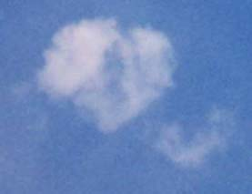
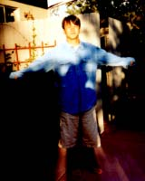

セドナ日記 〜 第５日目 98.5.8
B＆Bのテラスで朝日を浴びる
 B＆B最高の部屋で寝たからといって、やっぱり時間が止まってしまうわけではなかった。（そういう期待は普通しないが....）僕らのセドナ最後の夜が明けようとしている。最終日もエアポートメサにいって日の出を見るというプランもあったが、せっかくの高級な部屋での滞在時間を伸ばすべく、日の出は、B＆Bのテラスから見ることにした。
すがすがしい朝である。結構寒い。部屋専用のテラスからさらにドアをあけて、共用のテラスにでる。昨日、夕日だった太陽は、ちゃんと朝日になって戻ってきた。またまた、地球の大きさを想像し、気持ちよくなっていた。
そして、そらを見上げると、なんとそこに「ハート」型の雲が飛んでいた。カメラを取りに部屋に戻り、ついでにまだ寝ている千穂を起す。「ハート型の雲がでてるぞ！急げ〜」
さらに、東の空には、二人並んだ、双子雲（勝手に命名）が出ていた。この朝の雲のなかに、沢山の天使がいたのではないだろうか。僕らの、セドナからの旅立ちを歓迎してくれているののだろうと、思った。静かな、朝だった。充分朝日を浴びて、朝食までの短い眠りに再び落ちたのであった。
